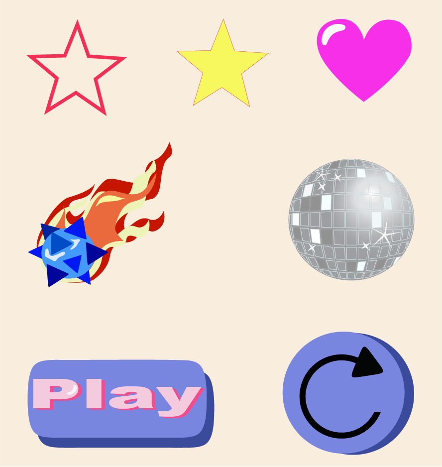

Løsning:
Projektbeskrivelse
I tema 3 skulle jeg designe og lave mit eget spil, og samtidig lære de grundlæggende færdigheder i JavaScript. Mit spil handler om disco aliens, hvor spilleren skal trykke på discokuglerne og undgå kometerne for at vinde. Selvom spillet er simpelt, var målet at bruge JavaScript til at skabe interaktivitet og animationer, og samtidig designe og implementere mine egne grafiske elementer. Jeg valgte at skabe et festligt univers med disco aliens og kometer, og brugte Adobe Illustrator til at designe disse spilelementer. For at gøre spillet mere engagerende tilføjede jeg også lydeffekter, som jeg selv lavede i Adobe Audition, og implementerede dem i spillet. Når spilleren trykker på discokuglerne eller interagerer med andre elementer i spillet, afspilles der passende lyde, hvilket giver spillet en ekstra dimension.
Læs om min proces her!
Jeg startede med at definere spillets koncept og regler. Jeg ville skabe et simpelt, men sjovt spil, hvor spilleren skulle trykke på discokuglerne og samtidig undgå kometerne. Efter at have lavet en grundlæggende idé, gik jeg videre til designet. Jeg brugte Adobe Illustrator til at tegne de grafiske elementer som discokugler, kometer og disco aliens. Jeg eksperimenterede med farver og animationer for at give spillet et festligt og energisk udtryk. Dernæst begyndte jeg at lære JavaScript og implementerede funktionaliteten i spillet. Jeg oprettede funktioner til at styre interaktionen mellem spilleren og spillets objekter, som bevægelse af kometer og reaktioner på, når man trykker på discokuglerne. Jeg ville også gøre spillet mere dynamisk og spændende ved at tilføje lyd. Jeg lavede mine egne lydeffekter i Adobe Audition og implementerede dem i spillet, så der blev afspillet passende lyde, når spilleren interagerede med elementerne. Dette gav spillet en mere levende og underholdende oplevelse.
Skitser
Først startede jeg med, at skitsere mine spilskærme og spilelementer i hånden
Papir prototype
Få et indblik i mine tidlige tanker om mit spil her.
Her kan du se en video, hvor jeg går i dybden med processen bag min papirsprototype, som er nøje udarbejdet på baggrund af mine allerførste skitser og fungerer som et vigtigt trin i mit designarbejde
Spilelementer
Logodesign
Klargørelse af kodning
Aktivitetsdiagram:
Statemachine diagram:
Udsnit af kode
Her er et udsnit af kode i javascript. Det ses her hvordan jeg har fulgt mine diagrammer for af animere mit spil
Læs om min læring her!
Dette projekt har været en stor læringserfaring, både teknisk og kreativt. Jeg lærte grundlæggende JavaScript og hvordan man kan bruge det til at skabe interaktivitet og spilmekanik. Jeg fik erfaring med at oprette funktioner til at styre bevægelse, interaktion og pointsystemer i spillet. Jeg blev også bedre til at bruge Adobe Illustrator til at designe grafiske elementer og tilføje animationer, hvilket gav spillet en unik visuel stil. En vigtig læring var også, hvordan lyd kan bidrage til spiloplevelsen. Ved at lave mine egne lydeffekter og implementere dem i spillet opdagede jeg, hvor meget lyd kan påvirke stemningen og brugerens oplevelse. Jeg lærte, hvordan man skal tænke på både design, programmering og lyd samtidig, for at skabe en helhedsoplevelse. Selvom spillet var simpelt, gav det mig en god forståelse af, hvordan man kombinerer flere elementer – programmering, design og lyd – for at skabe et engagerende og underholdende spil.